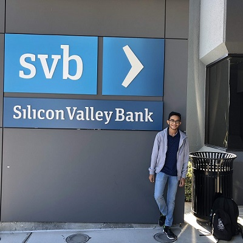

Poet by Passion, Engineer by Choice.
A bibliophile, tech-enthusiast, Harshit was among top 100 students to get selected for a Knowledge Tour to California, under Rajasthan Student StartUp Exposure Program, 2018 organised by Government of Rajasthan. He was also a finalist of Smart India Hackathon 2019, along with his team, The Sixth Error. Having worked as a content writer with The Green Side Productions, He has a field experience of 2 years.